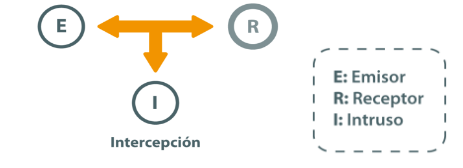
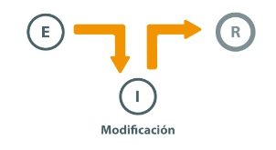
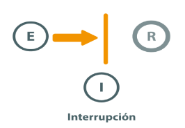
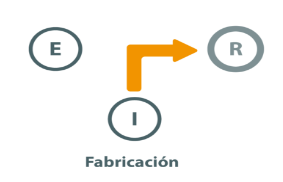

AMENAZAS
Clasificacion de las amenazas
De forma general podemos clasificar las amenazas en:
- Amenazas fisicas
- Amenazas logicas
Estas amenazas tanto fisicas como logicas son materializadas por:
- las personas
- programas específicos
- catástrofes naturales
origen de las amenazas
- Amenazas naturales: inundación, incendio, tormenta, fallo eléctrico, explosión, etc..
- Amenazas de agentes externos: virus informáticos, ataques de una organización criminal, sabotajes terroristas, disturbios y conflictos sociales, intrusos en la red, robos, estafas, etc..
- Amenazas de agentes internos: empleados descuidados con una formación inadecuada o descontentos, errores en la utilización de las herramientas y recursos del sistema, etc...
Intencionalidad de las amenazas
- Accidentes: averías del hardware y fallos del software, incendio, inundación, etc...
- Errores: errores de utilización, de explotación, de ejecución de procedimientos, etc...
- Actuaciones malintencionadas: robos, fraudes, sabotajes, intentos de intrusión, etc...
NATURALEZA DE LAS AMENAZAS
La agrupación de las amenazas atendiendo al factor de seguridad que comprometen es la siguiente:
- Interceptación
- Modificación
- Interrupción
- Fabricación
1. flujo normal de la informacion:
se garantiza:
2. Interceptacion: acceso a la información por parte de personas no autorizadas. Uso de privilegios no adquiridos.

- deteccion dificil: no deja huellas.
se garantiza:
- integridad
- disponibilidad
- integridad
- disponibilidad
No se garantiza:
3. Modificacion: acceso no autorizado que cambia el entorno para su beneficio.

- deteccion dificil segun circunstancias
se garantiza:
- Disponibilidad: la recepción es correcta
- Integridad: los datos enviados pueden ser modificados en el camino.
- Confidencialidad: alguien no autorizado accede a la información.
No se garantiza:
4. Interrupcion: puede provocar que un objeto del sistema se pierda, quede no utilizable o no disponible.

- Deteccion inmediata:
se garantiza:
- Confidencialidad: nadie no autorizado accede a la información
- Integridad: los datos enviados no se modifican en el camino
- Disponibilidad: puede que la recepción no sea correcta.
No se garantiza:
5. Fabricacion: puede considerarse como un caso concreto de modificación ya que se consigue un objeto similar al atacado de forma que no resulte sencillo distinguir entre objeto original y el fabricado.

- Deteccion dificil delitos de falsificacion:
se garantiza:
- Confidencialidad: nadie no autorizado accede a la información.
- Integridad: los datos enviados no se modifican en el camino
- Disponibilidad: la recepción es correcta.
Amenazas provocadas por personas
La mayor parte de los ataques a los sistemas informáticos son provocados, intencionadamente o no, por las personas.
¿Qué se busca?
En general lo que se busca es conseguir un nivel de privilegio en el sistema que les permita realizar acciones sobre el sistema no autorizadas.
Podemos clasificar las personas 'atacantes' en dos grupos:
- Activos:su objetivo es hacer daño de alguna forma. Eliminar información, modificar o sustraerla para su provecho.
- pasivos: su objetivo es curiosear en el sistema.